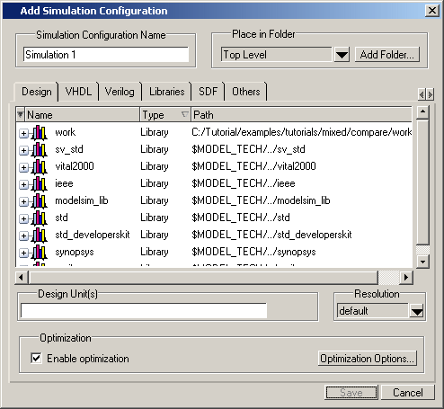
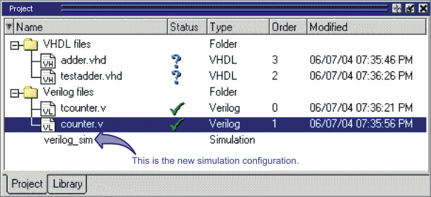

A Simulation
Configuration associates a design unit(s) and its simulation options.
Ordinarily, you would have to specify simulation options each time
you load the design. With a Simulation Configuration, you specify
the design and simulation options and then save the configuration
with a name.
For
example, assume you routinely load a particular design and you also have
to specify the simulator resolution limit, generics, and SDF timing
files. With a Simulation Configuration, you would specify the design
and those options and then save the configuration and name it top_config.
This name is then listed in the Project window where you can double-click
it to load the design along with its options.
Procedure
- Add a simulation configuration
to the project by doing either of the following:
This displays the dialog box
shown in Figure 1.
Figure 1. Add Simulation Configuration
Dialog Box
- Specify a name in the Simulation
Configuration Name field.
- Specify the folder in which
you want to place the configuration (see Organizing Projects with Folders).
- Select one or more design
unit(s). Use the Control and/or Shift keys to select more than one
design unit. The design unit names appear in the Simulate field
when you select them.
- Use the other tabs in the
dialog box to specify any required simulation options.
Tip Similar to a Simulation Configuration,
an Optimization
Configuration is a named object that represents an optimized simulation.
The procedure for creating and using it is similar to the steps
for Simulation Configuration, with the following differences:
Choose . Specify options in the Add
Optimization Configuration dialog box.
Click OK
Results
The simulation configuration
is added to the Project window, as shown in Figure 2.
As noted, the name of the new
simulation configuration you have added is verilog_sim.
To load the design, double-click
on verilog_sim.
Figure 2. Simulation Configuration
in the Project Window